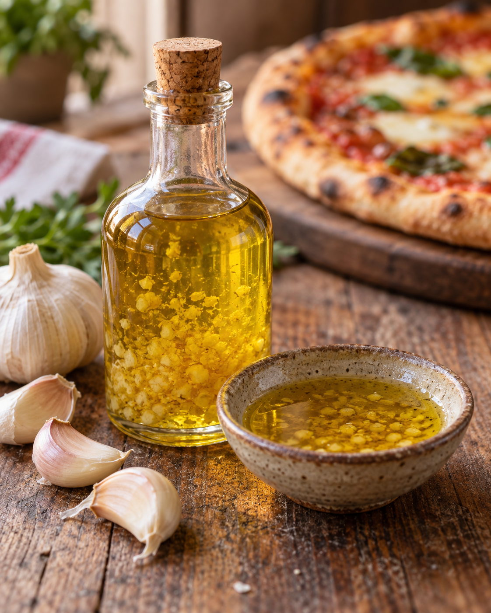

Das macht den Unterschied
Knoblauchöl

Dieses schnelle Knoblauchöl bringt ordentlich Geschmack auf Pizza, Pasta und Brot. Besonders gut passt es zu unserem neapolitanischen Pizzateig und der Variante mit Garnelen, Cherrytomaten und Rucola.
Zutaten
1 KnolleKnoblauch
250 mlRapsöl, alternativ mildes Olivenöl
½ TLSalz
Zubereitung
- Die Knoblauchknolle in einzelne Zehen teilen und alle Zehen sorgfältig schälen.
- Knoblauch, Salz und einen kleinen Teil des Öls in ein hohes Gefäß geben. Mit dem Pürierstab zu einer feinen Paste pürieren.
- Die Knoblauchpaste in ein sehr sauberes Glas füllen und mit dem restlichen Öl aufgießen. Gut verrühren, sofort verschließen und direkt in den Kühlschrank stellen.
- Vor dem Verwenden noch einmal umrühren und nach Geschmack über die fertige Pizza träufeln oder zum Verfeinern anderer Gerichte verwenden.
Aufbewahrung
Das Knoblauchöl nicht auf Vorrat bei Raumtemperatur lagern. Nach der Zubereitung sofort kühlen und spätestens am folgenden Tag verbrauchen. Übriges Öl am besten direkt portionsweise einfrieren und nach dem Auftauen zügig verwenden.